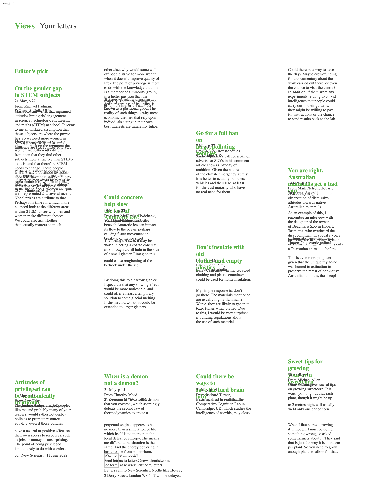
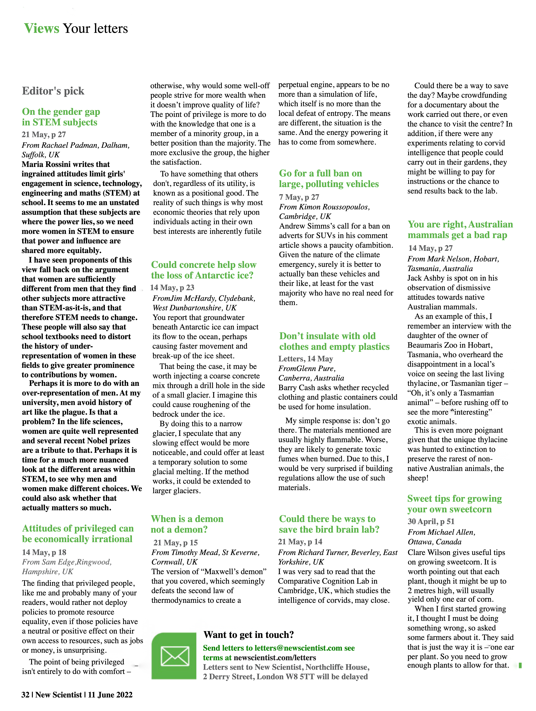

ICDAR 2026 Oral
REPLICA
An Agentic Framework for
Visually Faithful Document Reconstruction
Visually Faithful Document Reconstruction
The familiar starting point
OCR gets the words right…
Text extraction on a three-column multilingual page — every word recovered correctly.

Source page — 3 columns, mixed scripts, figures, headlines
మీ ఆడబిడ్డగా ఆశీర్వదించండి సిఎం కెసిఆర్ ఆశీస్సులతో మరోసారి బరిలో ప్రజల నుంచి మంచి
స్పందన ఉంది అభివృద్ధి చేస్తామనే నినాదంతో ముందుకు వెళ్తా మెదక్ బిఆర్ఎస్ అభ్యర్థి
పద్మాదేవేందర్రెడ్డి మనతెలంగాణ/మెదక్ ప్రతినిధి మంత్రి హరీశ్రావుకే మా మద్దతు
మద్దతు ప్రకటించిన వివిధ సంఘాలు పోస్టల్ బ్యాలెట్ ద్వారా ఓటు హక్కు వినియోగించుకోవాలి
సైబర్ నేరాలపట్ల జాగ్రత్తగా ఉండాలి పారిశ్రామిక రంగంలో విప్లవాత్మక మార్పులు వచ్చాయి
నేడు సంగారెడ్డికి కేటీఆర్ ఐదు వేల బైక్లతో ర్యాలీ, గంజ్మైదాన్లో సభ వంద శాతం
ఓటింగే లక్ష్యం జిల్లా ఎన్నికల అధికారి, కలెక్టర్ రాజర్షి షా చేగుంట మండల కేంద్రంలో
బిఆర్ఎస్ ఇంటింటి ప్రచారం…
OCR output — 100% character accuracy
Where the field stands
Everyone recovers text. Nobody recovers the page.

Source

Marker — columns linearised

GPT-5 — style & placement drift

REPLICA (ours)
What FID-HTML encodes
Six dimensions, one web-native file

Semantic tags support downstream LLM tasks · absolute + relative positioning maintain layout · inline styling ensures faithful rendering · VLM alt-text enables screen-reader accessibility.
The pipeline, at a glance
REPLICA end-to-end

Spot the difference
Source scan vs rendered FID-HTML

Original — scanned page
REPLICA — live FID-HTML render (selectable text)
Beyond reconstruction
What FID-HTML unlocks

Thank you
Questions?

replica-agents.github.io
tallapragada.s@research.iiit.ac.in